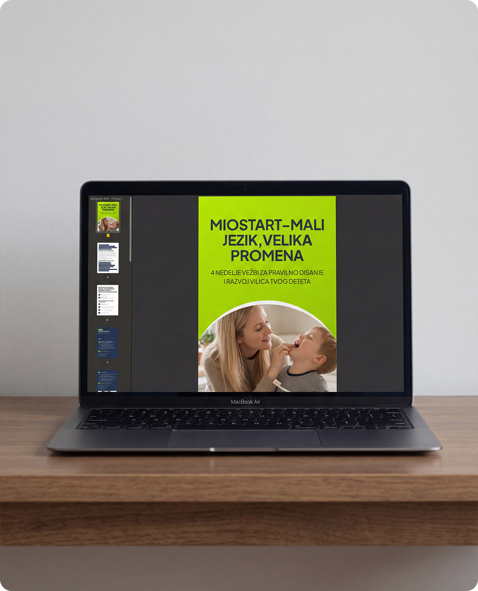

Program vežbi za disanje i razvoj vilice
Miostart – mali jezik, velika promena
Praktičan program koji vam pokazuje kako da, za 8 do 12 minuta dnevno i kroz igru, radite sa detetom vežbe za disanje, jezik i mišiće lica.
Digitalni PDF · Jednom kupite, koristite dugoročno

Za koga je program
Za roditelje čija deca dišu na usta, imaju poteškoće sa govorom, vilicom ili pažnjom.
Mnogi roditelji imaju osećaj da rešavaju jedan problem za drugim, a da nikako ne dođu do zajedničkog uzroka. Program se bavi svakodnevnim navikama, kao što su disanje i položaj jezika.
- Disanje i nosDete često diše na usta, ima zapušen nos ili česte infekcije grla.
- GovorDete se muči sa izgovorom glasova, a napredak u radu sa logopedom je spor.
- Zubi, vilica, pažnjaPrimećujete krive zube, usku vilicu, umor ili teškoće sa pažnjom.
Vežbe usmerene na podsticanje disanja kroz nos.
Vežbe za jezik i pravilno gutanje.
Vežbe za mišiće usana, obraza i lica.
Neuro vežbe za koordinaciju i pažnju.
Program je edukativni materijal za rad kod kuće. Ne zamenjuje pregled, dijagnozu niti terapiju koju planira stručnjak. Ako dete ima izražene tegobe ili je u terapiji, posavetujte se sa lekarom koji ga prati.
Šta dobijate
Sve na jednom mestu, jednostavno za primenu kod kuće.
- Kompletan četvoronedeljni program vežbi
- Tačne instrukcije za svaki dan
- Vežbe za disanje, jezik i mišiće lica
- Neuro vežbe za bolju koordinaciju i pažnju
- Smernice kako da radite sa detetom bez stresa
- Sistem koji postaje deo svakodnevice
Kako izgleda program
Jasna struktura po nedeljama, prilagođena deci kroz igru.
- Trajanje
- 4 nedelje
- Vreme
- 8–12 min dnevno
- Učestalost
- 1× dnevno, po potrebi 2×
Tema nedelje — potvrditi iz programa
Tema nedelje — potvrditi iz programa
Tema nedelje — potvrditi iz programa
Tema nedelje — potvrditi iz programa
Tačna uputstva, korak po korak.
Kako da vežbe pretvorite u igru.
Kako da dete sarađuje bez pritiska.
Kako da prepoznate napredak.
Cena i pristup
Jednom kupite, koristite dugoročno.
Program dobijate u digitalnom PDF formatu. Kupovina se obavlja na postojećoj, bezbednoj stranici za plaćanje.
Miostart – mali jezik, velika promena
19 €
Jednokratno plaćanje · digitalni PDF
- Četvoronedeljni program sa dnevnim instrukcijama
- Vežbe za disanje, jezik, mišiće lica i koordinaciju
- Smernice za rad sa detetom kroz igru
Plaćanje platnom karticom. Sve transakcije su bezbedne i šifrovane; podaci o karticama se ne čuvaju na serverima sajta.
Česta pitanja
Pre nego što se odlučite
Ne. Miostart je edukativni program za rad kod kuće. Ne zamenjuje pregled, dijagnozu niti individualno planiranu terapiju. Ako imate nedoumicu o razvoju deteta, potražite stručnu procenu.
Od 8 do 12 minuta dnevno, jednom dnevno, a po potrebi dva puta. Program traje četiri nedelje.
Program je u digitalnom PDF formatu. Jednom ga kupite i koristite dugoročno.
Uzrast — potvrditi sa autorkom
Odgovor potvrditi sa autorkom. Preporuka: posavetujte se sa stručnjakom koji vodi terapiju deteta.
Plaćanje se obavlja platnom karticom na bezbednoj stranici za plaćanje. Način i vreme isporuke PDF-a — potvrditi

O autorki programa
dr Dragana Radojković Šarić
Stomatolog, specijalista ortopedije vilica i mama troje dece.
Za više od 15 godina rada na ispravljanju problema sa zagrižajem, vilicama i položajem zuba kod dece i odraslih, razvila je potrebu da sagleda širu sliku: kako sprečiti mnoge od problema i kako postići stabilan rezultat posle terapije.
„Funkcionalna ortodoncija, vežbe za mišiće lica i pažnja na pravilnim funkcijama, pravi je put u rešavanju uzroka problema. Uživajte u vežbama i igrama sa svojim detetom.”dr Dragana Radojković ŠarićViše o doktorki
Miostart · 19 €
Počnite sa kratkim, svakodnevnim vežbama kroz igru.
Ako niste sigurni da li je program pravi izbor za vaše dete, počnite od besplatnog vodiča ili potražite stručnu procenu.
Uslovi kupovine: link ka uslovima korišćenja · pravo na odustanak i povraćaj · Politika privatnosti